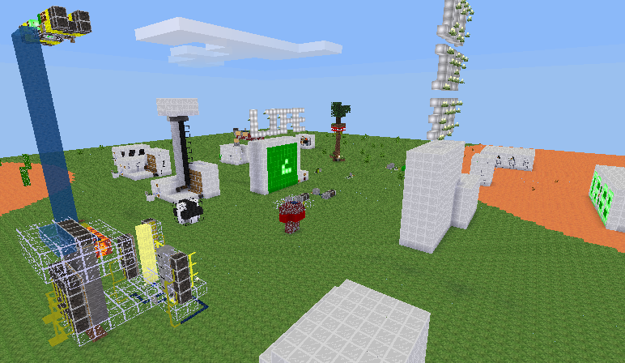
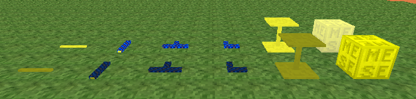
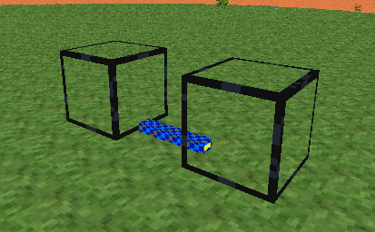
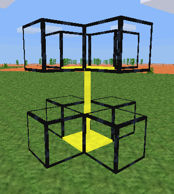
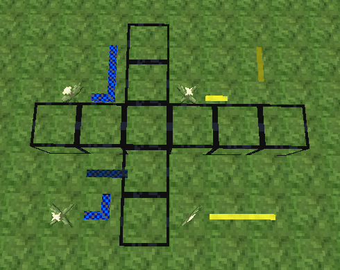
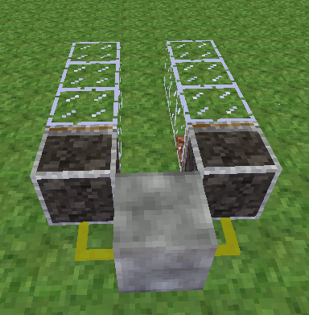
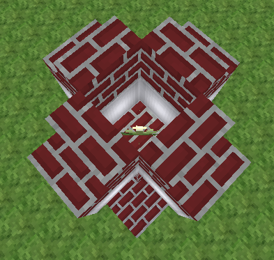

Mesecons Laboratory
Adventures in digital circuitry.
Mesecons Basics
6/5/13 - Uberi
Difficulty level:


 (1/10)
(1/10)
So far we've already looked at a couple of machines, but not at Mesecons itself. That won't do! This is a usage guide for new Mesecon users, including those without Redstone experience.
Let's look at exactly what Mesecons can do, and how you can use it.
Overview
Mesecons is a digital circuitry mod for Minetest that allows players to create circuits that can do nearly anything.
Mesecons resembles real life circuitry in that you have wires that carry information around and various things that affect or are affected by them, but the basic similarities end there.
There are three basic types of things in the Mesecons mod: wires, receptors, and effectors. We'll look at each one in detail below, but for now we'll go through a summary.
Wires conduct signals around, while receptors do the actual creating of those signals. Effectors do things based on those signals. Some things can act as both receptors and effectors, which is useful for doing things like modifying signals.
Wires
These are Mesecon wires:
Left to right: normal wire, insulated wire, T-junction wire, corner wire, vertical wire, MESE block. Rear wires are on, front wires are off.
There are a lot of different wires that have distinct uses, but all of them perform essentially the same task. First of all, Mesecon wire has two states: on and off. The on state is generally brighter or more saturated in color than the off state. Wires are off when you place them down, but they can be turned on by being conducted to.
A Mesecon wire that is on (the wire is in the on state) will cause other wires and effectors adjacent to it to turn on as well, a process known as conduction. Which adjacent ones that turn on are determined by the specific type of wire.
In the pictures below, the black boxes denote where the wire conducts. Other locations are completely unaffected by whether it is on or off.
The normal wire conducts in the four cardinal directions, North-East-South-West, but not diagonally. Looking from the side, it conducts to nodes on the same level, or the level above and below it. However, it does not conduct directly above or below:

The insulated wire, in contrast, conducts only at the ends. The direction is determined by the direction you are facing when you place the wire.
The T-junction wire gets its name from the shape it forms and conducts in. The direction is determined by the direction you are facing when you place the wire.

The corner wire conducts only at its ends as well, but they are perpendicular to each other. The direction is determined by the direction you are facing when you place the wire.

The vertical wire has caps on each end that conduct only in the cardinal directions on the same vertical level as well as directly above or below. The thin parts without caps only conduct directly above or below. Vertical wires can be stacked on top of each other, and only the top and bottom ones will be capped.
The MESE block is extended by Mesecons to conduct in the cardinal directions as well as directly above and below.

Two wires will only conduct between each other if they are adjacent and both conduct to the location of the other:
Receptors
Wires are nice and all, but how do we turn them on if the only way to make one come on is to have something that is already on beside it? That's where receptors come in. Receptors are, in short, things that are not wires, but can also be on and off. Receptors can do things like turning on and off depending on whether there is light, when a player interacts with them, or a lot of things, really. There are far too many types of receptors to describe here, but we'll cover the most important ones.
Power plants are simply always on - they will power anything in the same positions as normal Mesecon wire. Blinky plants behave similarly, but turn on and off every few seconds:

Switches, buttons, and levers are all player controlled - punching switches and levers toggles them between on and off, while buttons turn on when punched and then turn off again after a little while. Switches conduct to the same positions as normal wire, while buttons and levers only conduct to the back or to the node behind the one to the back:

Pressure plates come in wood and stone varieties, which differ mainly in appearance. They turn on when someone or something stands on them - this includes players, mobs, and items. Special rules mean that in addition to conducting to the same locations as normal wire, they also conduct to the node below the node directly below themselves:

Effectors
Now that we have a way to create and carry signals, it's time to do something with them. Effectors are made specifically for this purpose. Effectors can do things like giving off light, moving nodes around, playing music, or even running chat commands. There are far too many types of effectors to describe here, but we'll cover the most important ones.
Meselamps and lightstone light up when they have an on signal and don't give off any light otherwise. Meselamps are brighter than lightstones, while lightstones are available in many different colors:

Pistons can push a column of nodes and entities by one block, and the sticky piston can also pull the closest one. Entities on top of a stack being pushed horizontally are also moved. Movestones (not shown) do something similar, but can push nodes along a "rail" made of conductive materials:
Noteblocks play a certain note when they receive an on signal. The instrument used to play the note is determined by the node it's placed on top of, while the pitch (how high the note is) is changed by punching it. Placing one on wood planks causes it to make a litecrash sound, tree trunks cause a crash sound, chests cause a snare sound, stone causes a kick sound, glass causes a hihat sound, and anything else causes a piano sound:

Command blocks execute a chat command when they receive an on signal. However, they are not obtainable in survival mode without cheats due to the potential for abuse. Command blocks can only be changed by their owners (the player that placed it) and show a dialog when right clicked, which allows the target, command, and parameters to be set. Certain special commands are also available - more details can be found by using the "/help" chat command:

Putting it all together
Now that we know how to create, transmit, and cause actions with Mesecon signals, we can look at the area where Mesecons really shines: manipulating signals with digital logic.
Let's say we want to have street lamps that come on only at night. A basic street lamp looks something like the following:

At the moment, it's not giving off light. Let's give the lightstone an on signal:
Now it's always on. But what about coming on only at night? Let's power it using a solar panel:

Just a small problem remains - it only turns on in the day! That's about as useful as a solar powered flashlight. What we need to do is take the opposite of the solar panel's signal.
This is where digital logic comes in. In digital logic, the operation of taking the opposite of a signal is called a "logical NOT". It just so happens that Mesecons has a few devices that can do this operation, as well as many more. In our case, a Mesecon torch does the job very nicely:

The Mesecon torch simply takes the signal on the other side of the node it's attached to, and changes its state so that it's the opposite. That means that when the solar panel is on, the torch is off, and when the solar panel is off, the torch is on. In our case, we use this to detect the absence of light by taking the opposite of the solar panel's light detection.
There are tons of different ways you can manipulate signals like this. In fact, manipulate them enough and there's nothing you can't build - see the Tic-Tac-Toe and Node Detector articles on this site for inspiration. Logic gates can be used just like they are in real life to build many of the electronics we use every day. For the most complex manipulations, there are even Luacontrollers that can be programmed in-game to do just about anything.
Going Forward
You probably won't be building Mesecons computers by this point, but hopefully you'll agree that Mesecons does in fact add a huge amount of awesome to Minetest no matter what your playing style is.
For the engineer in you, why not give Digilines a try? LCD displays, data buses, and more are waiting to be made into something incredible. Everything works with Mesecons, of course.
If you love automating things and making them more efficient, Pipeworks is a great choice. Craft items, transport them, or even organize them, all automatically! Pipeworks, of course, also works great with Mesecons - you can control how pipes and tubes work using signals.
However, if your interests lie with digital logic and manipulating different signals to do different things (like building doors that open only if you push the right sequence of buttons), look no further! Mesecons has logic gates, programmable controllers, and even timing circuits for you to play to your heart's content.

This work is licensed under a Creative Commons Attribution-ShareAlike 3.0 Unported License.
Need to contact me? Do so at my website!